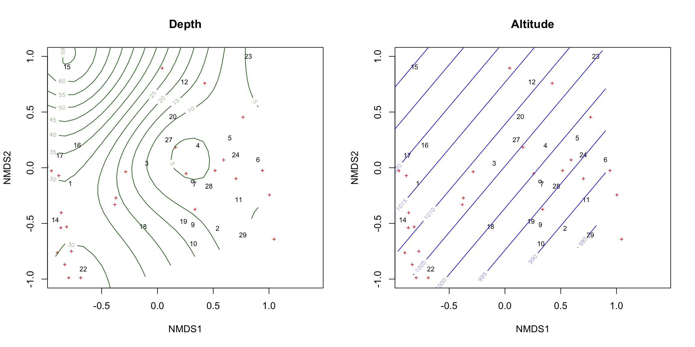

The non-metric multi-dimensional scaling (NMDS) is, as its name implicates, the MDS for non-metric data (recall the widely used metric MDS is the PCoA).
According to the definition from Wikipedia, the NMDS finds a non-parametric monotonic relationship between the dissimilarities in the item-item matrix and the Euclidean distance between items, and the location of each item in the low-dimensional space.
Translate this into simplified language, it says the NMDS …
highlights the similarities between samples of multidimensional measurements.
reduces the dimensions of the multidimensional data, but the number of dimensions are predefined, in contrast to PCA and PCoA, which always show the most important two axes.
analyses distance matrix, which is commonly a dissimilarity distance matrix.
is a visualization method, it has thus less precision and much less accountability for further usage of the analysis result in compare to the PCA. For a statistical assessment, additional tests regarding to particular hypothesis must be performed, and that’s why we are combining NMDS with PERMANOVA.
uses a rank based approach (which makes NMDS a non-metric technic), this rank is maintained consistent while reducing dimensions (monotonic).
is an iterative algorithm, which use stress values to guide the iteration (Details 4 in ?metaMDS). NMDS tries to improve the iteration by randomly choosing starting point. This is similar to monte carlo algorithm, which trade its accuracy for its efficiency. This randomization part makes the NMDS not 100% reproducible.
Stress
The inconsistency between original high-dimensional data and the reduced low-dimensional data is measured by the stress in each iteration. The value ranges from 0 to 1, where 0 means a perfect fit and 1 means no fit.
Generally, stress values below 0.2 are considered acceptable, below 0.1 is good. The stress value should be reported with NMDS while publishing results.
Higher number of samples often leads to higher stress value, also a very low stress value might indicate that the dataset is too small for the NMDS.
Getting started
We will use the metaNDS() from package vegan to calculate the NMDS and visualize the result using ordiplot(). As demonstration, we use a tadpole abundance data (subgenus) collected in a Madagascan rain forest:
dim(tadpoleSp)
[1] 29 45
str(tadpoleSp[, c(1:6)]) # only showing the first 6 species
The metaMDS has an argument autotransform defaults to TRUE, which arbitrarily transform data if they exceeded certain sizes. However, the transformation should better be done independently.
The above command will print out stress values from each iteration. The result with the least stress value can also be called out afterwards:
Call:
metaMDS(comm = tadpoleSp, k = 2, autotransform = FALSE)
global Multidimensional Scaling using monoMDS
Data: tadpoleSp
Distance: bray
Dimensions: 2
Stress: 0.1713525
Stress type 1, weak ties
Best solution was not repeated after 20 tries
The best solution was from try 20 (random start)
Scaling: centring, PC rotation, halfchange scaling
Species: expanded scores based on 'tadpoleSp'
Visualizing NMDS
ordiplot is a function specialized on ordination result from vegan. We can control the representation of sites or species easily using type and display argument. A simple plot with points will look like this:
Warning in plot.xy(xy.coords(x, y), type = type, ...): "add" ist kein
Grafikparameter
Warning in text.default(...): "add" ist kein Grafikparameter
ordisurf(tadNMDS, depth, main ='Depth', col ='darkgreen', add =TRUE)
Family: gaussian
Link function: identity
Formula:
y ~ s(x1, x2, k = 10, bs = "tp", fx = FALSE)
Estimated degrees of freedom:
6.64 total = 7.64
REML score: 109.5915
Warning in plot.xy(xy.coords(x, y), type = type, ...): "add" ist kein
Grafikparameter
Warning in plot.xy(xy.coords(x, y), type = type, ...): "add" ist kein
Grafikparameter
ordisurf(tadNMDS, altitude, main ='Altitude', col ='blue', add =TRUE)

Family: gaussian
Link function: identity
Formula:
y ~ s(x1, x2, k = 10, bs = "tp", fx = FALSE)
Estimated degrees of freedom:
0.849 total = 1.85
REML score: 168.5419
Try run a PERMANOVA
adonis2(formula = tadpoleSp~depth*altitude)
Permutation test for adonis under reduced model
Terms added sequentially (first to last)
Permutation: free
Number of permutations: 999
adonis2(formula = tadpoleSp ~ depth * altitude)
Df SumOfSqs R2 F Pr(>F)
depth 1 1.1285 0.14888 5.1393 0.001 ***
altitude 1 0.1086 0.01433 0.4946 0.878
depth:altitude 1 0.8534 0.11259 3.8865 0.001 ***
Residual 25 5.4894 0.72421
Total 28 7.5799 1.00000
---
Signif. codes: 0 '***' 0.001 '**' 0.01 '*' 0.05 '.' 0.1 ' ' 1